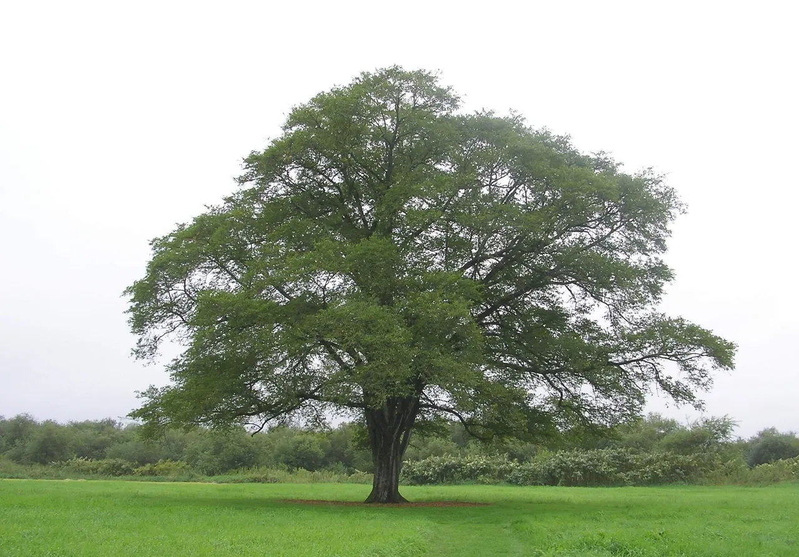
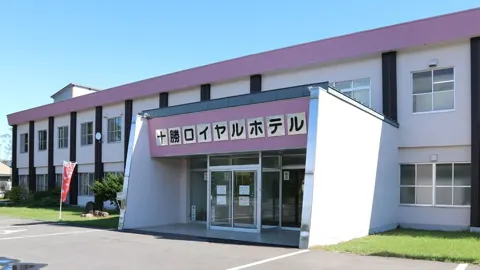
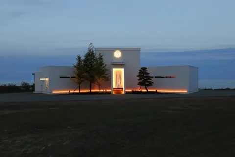
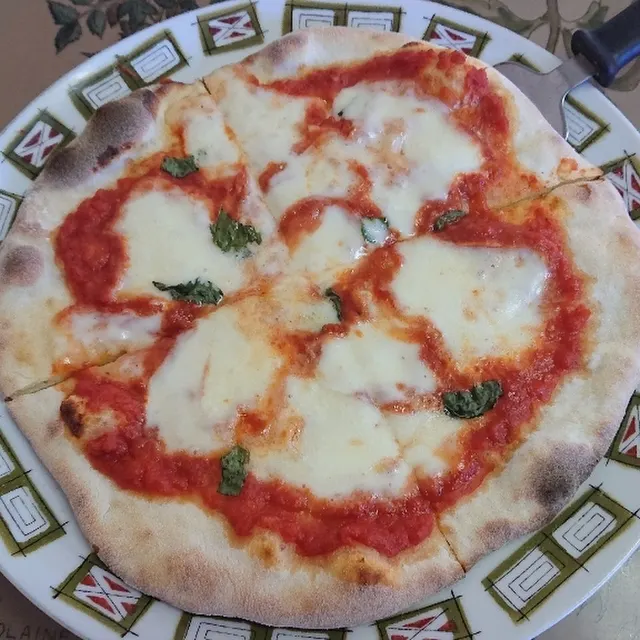
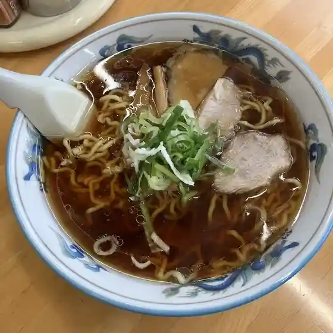
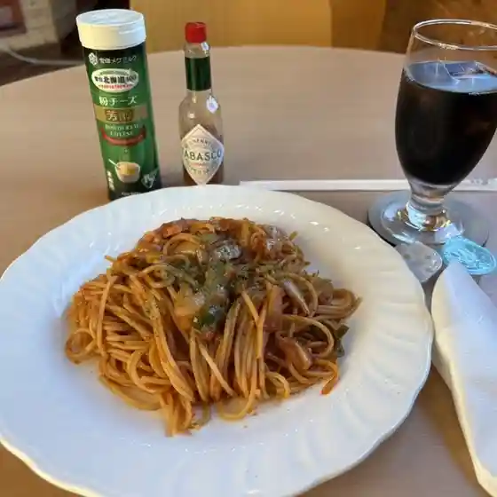
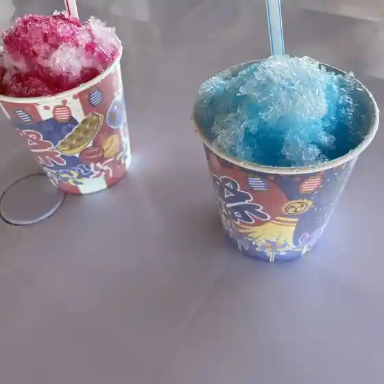
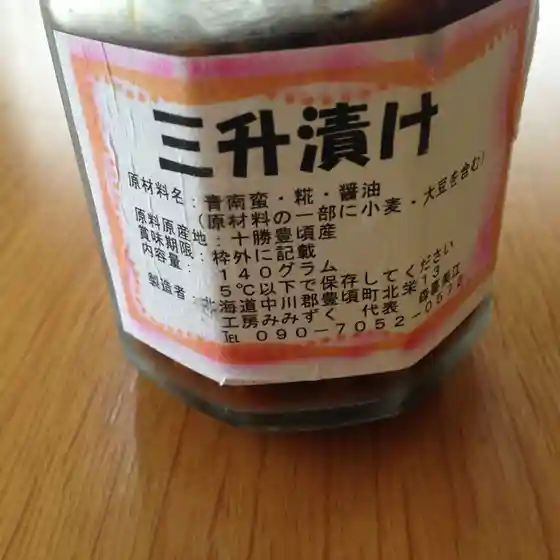
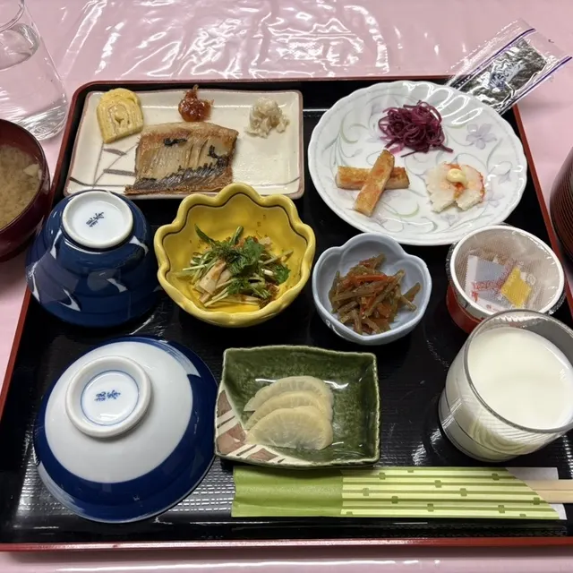
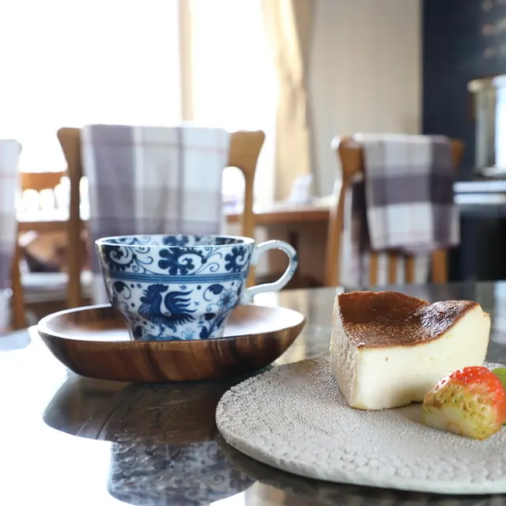

Toyokoro
Toyokoro · Hokkaido
Toyokoro
Highlighted on the Hokkaido map.

Stay
十勝ロイヤルホテル

Tokachi Royal Hotel
Hotel in Toyokoro, Hokkaido.
ELEZO ESPRIT

Elezo Esprit
Auberge in Toyokoro, Hokkaido.
Dining
はらっぱ

Harappa
赤胴ラーメン

Akadou Raamen
喫茶ふわり

Kissa Fuwari
かとうちゃん

Katouchan
いんかるしー長節 cafe

Inkarushii Nagafushi Cafe
とよころ物産直売所

Toyokoro Bussan Chokubai Tokoro
十勝ロイヤルホテル

Tokachi Roiyaruhoteru
B&B丘/the Cafe

B&B Oka /The Cafe
きいちゃん食堂
Kiichan Shokudou
セイコーマート はせがわ豊頃店
Seikoomaato Hasegawa Toyokoro Mise
とり良
Tori Ryou
セイコーマート 豊頃役場前店
Seikoomaato Toyokoro Yakuba Mae Mise
ココロコテラス
Kokorokoterasu
ハルニレソフト
Haruniresofuto
Brick by Brick
Brick By Brick
松村商店
Matsumura Shouten
レストラン いしだ
Resutoran Ishida
ELEZO ESPRIT
Elezo Esprit
そば処ホタル
Soba Tokoro Hotaru
中村水産
Nakamura Suisan
朝日堂
Asahi Dou